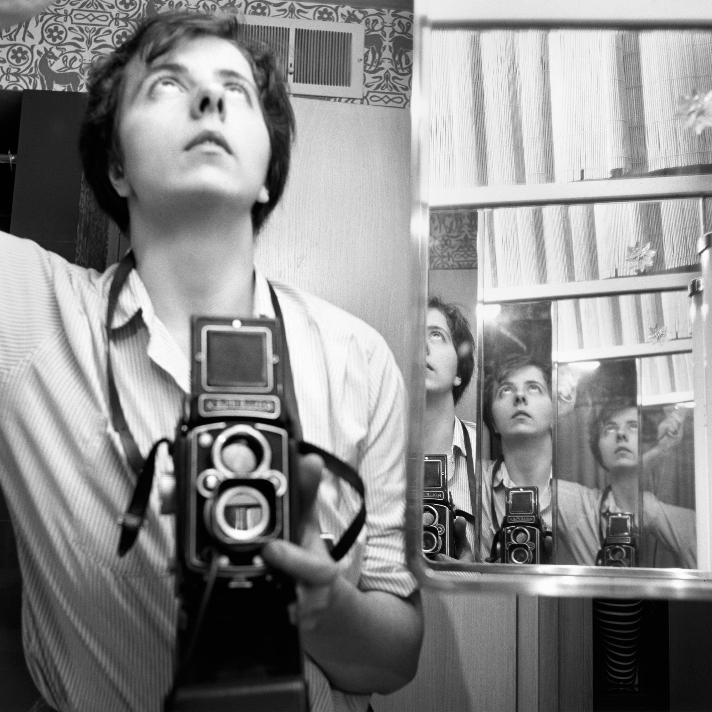

Who is Vivian Maier? Now considered one of the 20th century's greatest street photographers, Vivian Maier was a mysterious nanny who secretly took over 100,000 photographs that went unseen during her lifetime. In the documentary Finding Vivian Maier, John Maloof and Charlie Siskel profile a reclusive photographer and her undiscovered photo archive.
In her self-portraits, the photographer Vivian Maier could be the actress playing herself in the movie of her life. She confronts the camera with utter self-possession. She affects an austere, distancing look. Her medium-format Rolleiflex is ever-present, slung around her neck, cradled at her sternum, capturing the image reflected off a store window or car mirror. Her clothes — broad hats and big coats, calculated to conceal — suggest a secret agent in a postwar film noir.
Though her game seemed to be the espionage of art, rather than the art of espionage, she called herself a spy and a mystery woman, according to those interviewed in the documentary “Finding Vivian Maier,” due in theaters on Friday. Its directors, John Maloof and Charlie Siskel, try with admittedly mixed success to answer the central question: Why did a woman whom the critic Michael Kimmelman in The New York Times called one of “the great American midcentury street photographers” go totally unrecognized during her lifetime?
READ MORE